Animales en peligro de extinción
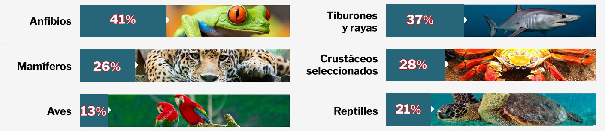Gorila de montaña
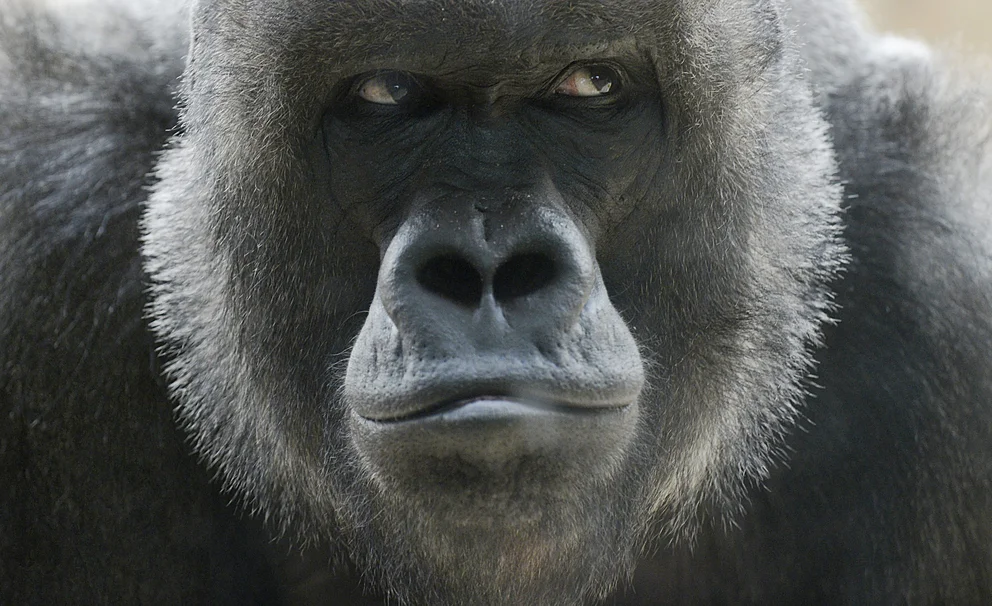Sólo quedan dos poblaciones en libertad en África oriental.
Oso polar
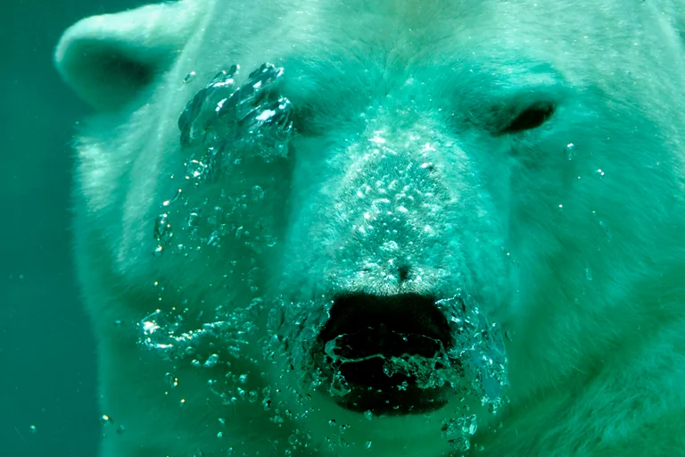Habitan en el hemisferio norte, es el único gran predador del Ártico.
Visón europeo
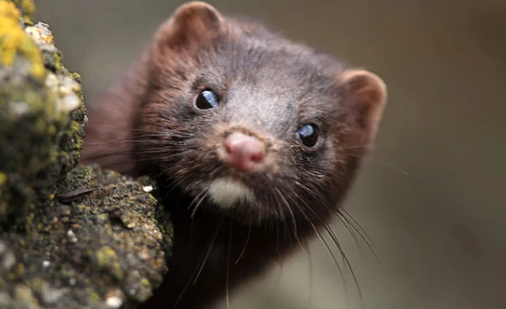Se estima que quedan 500 ejemplares.
Tigre de Sumatra
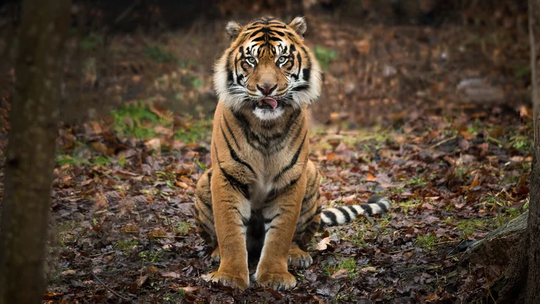El tigre de Sumatra está bajo una gran presión debido a la caza furtiva y la reducción del hábitat de la jungla.
Rinoceronte blanco
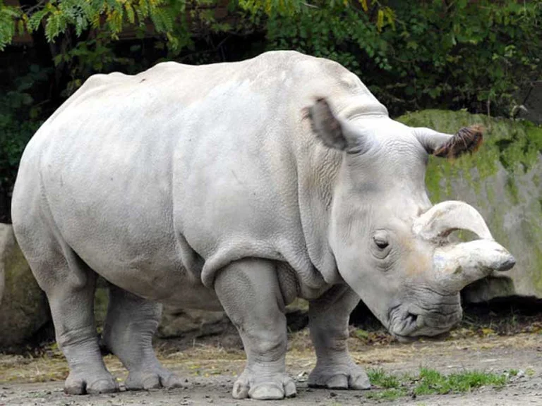Se estima que quedan 18.000 ejemplares. Habita el continente africano.
Pangolín
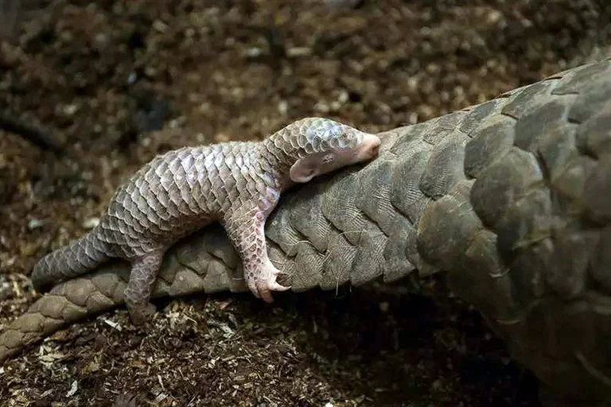Su hábitat se encuentra en Asia, son víctimas del comercio ilegal a gran escala para alimentar la demanda de su carne y de las escamas que los protegen.
Ajolote
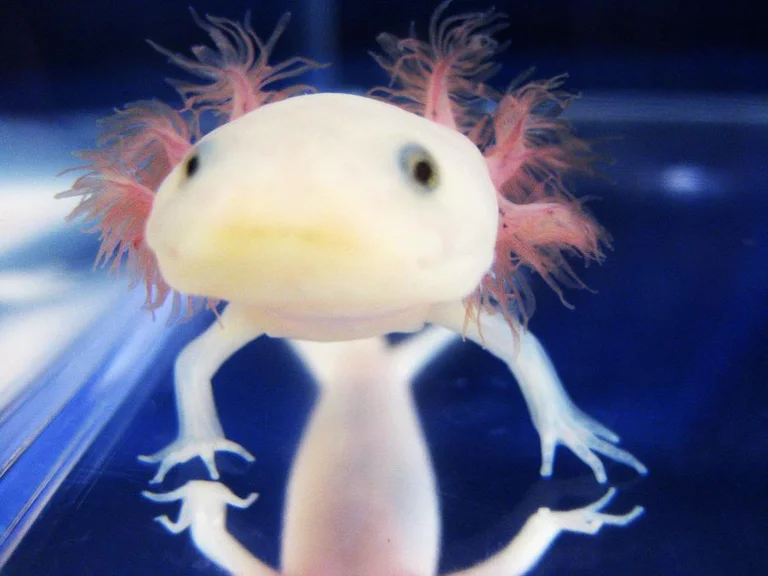Es una especie típica de México se encuentra en peligro crítico de extinción. El número de individuos descendido de forma drástica en los últimos años.
Pudú
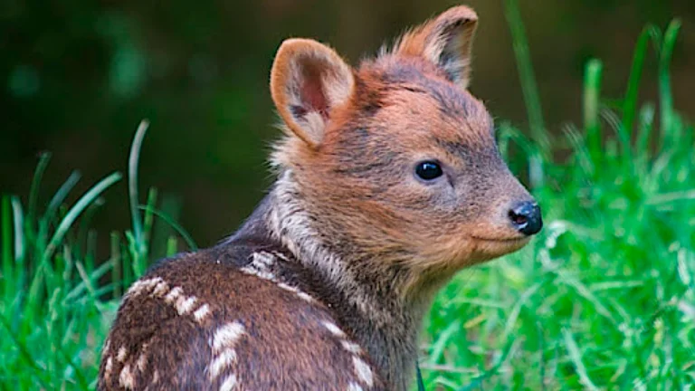Se encuentra amenazado por la pérdida y fragmentación del hábitat, los atropellamientos en rutas, la depredación por perros, la caza ilegal y el impacto de especies exóticas invasoras.
Ballena franca austral
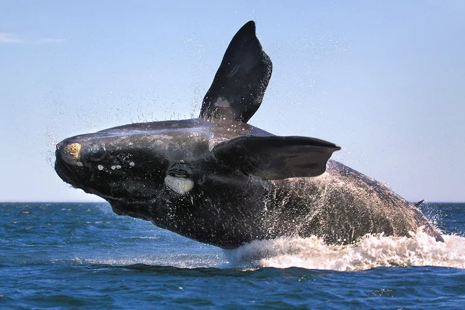Ha sufrido la caza indiscriminada desde el siglo XIX, su población original se redujo hasta en un 90 %.
Cóndor andino
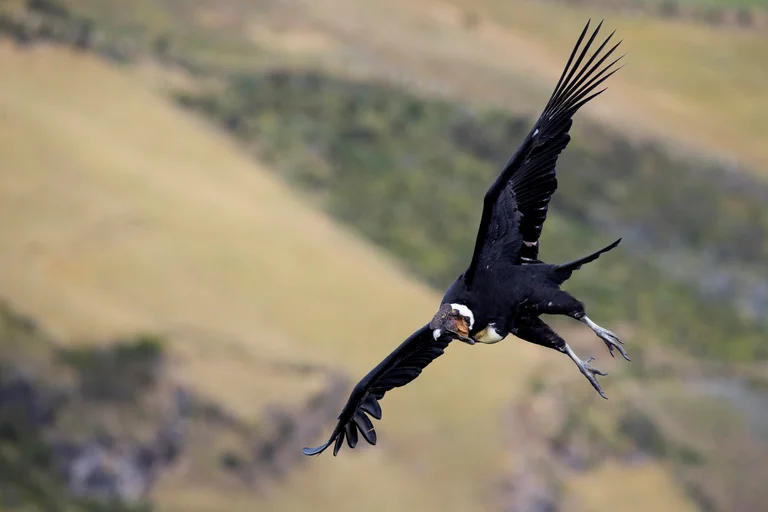Está amenazado por el envenenamiento por el consumo de cebos tóxicos, una práctica ilegal utilizada para el control de especies predadoras.
Pingüino de Magallanes
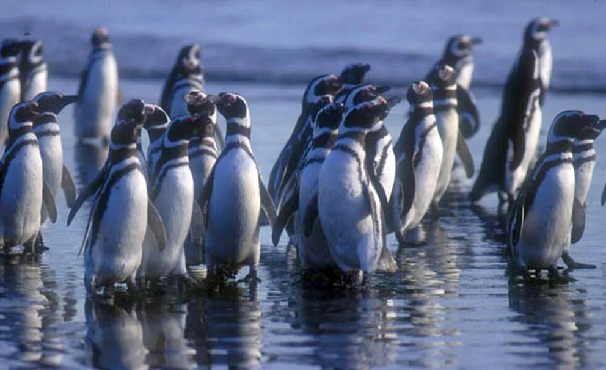Está en peligro por el cambio climático, las interacciones con las pesquerías, la contaminación por hidrocarburos, el turismo no controlado y la expansión de sus predadores.
Ubicaciones
Europa
- Visón europeo
- Cigüeña negra
- Lince ibérico
- Quebrantahuesos
América
- Ajolote
- Pudú
- Ballena franca austral
- Cóndor andino
- Pingüino de Magallanes
África
- Gorila de montaña
- Rinoceronte blanco
- Chimpancé
- Caballito de mar Knysna
- Rana de caña de Pickersgill
- Tortuga verde
Asia
- Tigre de Sumatra
- Pangolín
- Panda rojo
- Elefante asiático
- Tigre de bengala
Oceanía
- Demonio de Tasmania
- Kakapo
- Murciélago de la fruta de Bulme
- Alcatraz de Abbott
Antártida
- Kril antártico
- Pingüino emperador
- Foca cangrejera
- Peces nototenoideos
Polo Norte
- Oso polar
- El zorro ártico
- La ballena beluga
- La morsa del Pacífico